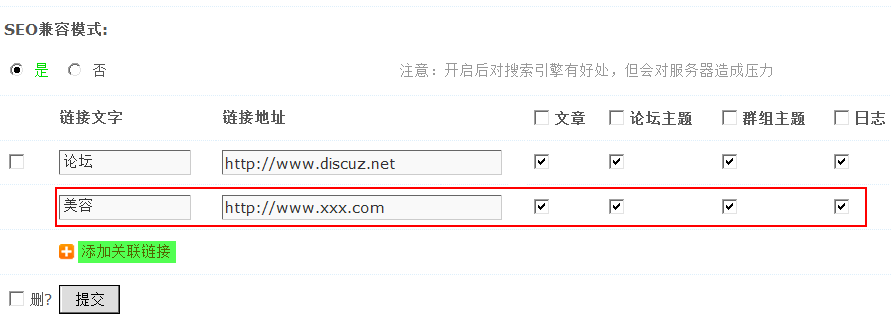
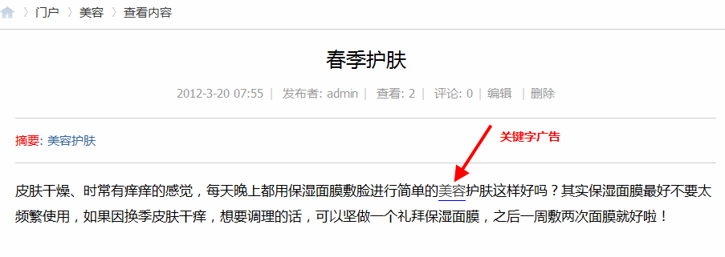

关联链接
关键字关联功能就像一瓶高级护肤品，有两种强大的功效。一是广告推广的功能（保湿锁水），二是他有很强大的SEO功效（美白靓肤）。
什么是广告推广呢？比如最近某化妆品商家和我们网站进行新品评测活动，为此我们网站组织了一次征文大赛活动，让用户领取新品后，写一篇关于我和某化妆品的故事。这样用户发布的帖子中含有某化妆品的名称，这个名称会自动加上相应的链接。用户可以点击链接进入商家页面，达到很强的品牌推广效果。
那什么是SEO功效呢？站内链接对于SEO优化的权重很高。比如五一快到了，我们的网站组织了一期抢楼活动，在活动内容的介绍中，我们可以将网站的名称加上链接。这样网站名称这个关键词在网站中的曝光率很高时，第三方在收录时就会认为这是很重要的东西，权重很高。相信我们在看一些大型的网站介绍或是教程时，会发现内容中会将网站名称加上链接。这样可以有效的提高SEO优化。
功能使用：
操作路径：【后台】=>【运营】=>【关联链接】
1、添加关联链接
点击“添加关联链接”填写链接文字、链接地址、选择关键字广告所投放的位置提交即可。这样前台发布的内容包含有相关的关键字时就会自动添加上设置好的链接地址。
SEO兼容模式：开启后对搜索引擎有好处，但会对服务器造成压力。
2、前台的显示效果
在后台添加好相关的关键字后，到前台发布包括该关键字的内容，如我们发布一篇文章，内容中包含关键字。
该关键字会自动加上链接地址，阅读者只要轻轻点击即可访问该关键字对应的网站地址。